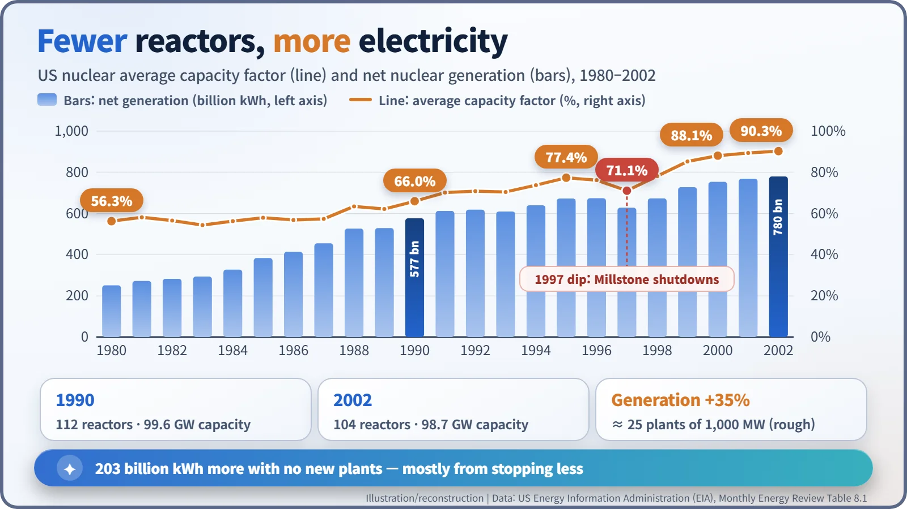
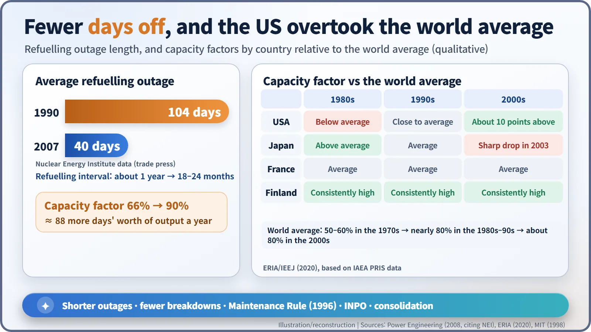
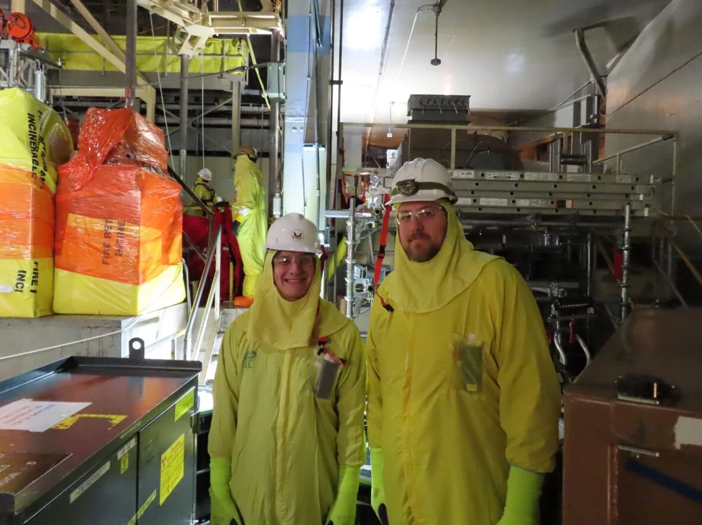

Nuclear History · 275
Twenty-Five Power Plants Nobody Built — The US Nuclear Capacity Factor Revolution of the 1990s
Shorter refuelling outages, fewer breakdowns, a new maintenance rule and a reorganised industry turned existing reactors into the decade's biggest new source of power.
Between 1990 and 2002 the United States built no new nuclear plants and even closed a few, yet its nuclear generation rose by 35%. The average capacity factor of its reactors climbed from 66.0% to 90.3% as refuelling outages shrank, breakdowns became rarer and the industry reorganised, adding roughly the output of 25 large reactors without pouring any concrete.
The plants that kept stopping
The biggest new power station to come into service in the United States in the 1990s does not appear on any map. Nobody dug a foundation for it. Yet between 1990 and 2002 it added roughly as much electricity as twenty-five large nuclear plants would have produced. Its secret: reactors that were already running simply stopped less often.
After the Three Mile Island accident of 1979, orders for new reactors dried up, and the plants that were operating did not have much of a report card either. According to the US Energy Information Administration (EIA), the average capacity factor of American nuclear plants was 56.3% in 1980, and still only 58.0% in 1985. [1]
The capacity factor compares what a plant actually generates with what it would have produced running flat out all year. At 56%, a reactor is missing the equivalent of about 160 days' output out of 365. It is not quite the same thing as availability, which measures how much of the time a plant was able to run; on a median-availability basis the 1980 figure comes out at around 65%. The two measures differ in level, but they tell the same story.

Twelve years in numbers
From 66.0% in 1990, the average capacity factor climbed to 77.4% in 1995, 88.1% in 2000 and 90.3% in 2002. Over the same period the number of operable reactors actually fell, from 112 to 104, and total capacity barely moved, from 99.6 to 98.7 gigawatts. Nuclear generation nevertheless rose by 35%, from 577 billion to 780 billion kilowatt-hours. [1]
That extra 203 billion kWh is the "invisible plant". A 1,000-megawatt reactor running at 90% produces about 7.9 billion kWh a year, so the increase equals roughly 25 such reactors: a rough conversion, but a striking one. Because electricity demand grew too, nuclear's share of US generation held at about one-fifth, 19.0% in 1990 and 19.8% in 2000. [2]
| Year | Average capacity factor | Operable reactors | Net generation (billion kWh) |
|---|---|---|---|
| 1980 | 56.3% | 71 | 251 |
| 1990 | 66.0% | 112 | 577 |
| 1995 | 77.4% | 109 | 673 |
| 1997 | 71.1% | 107 | 629 |
| 2000 | 88.1% | 104 | 754 |
| 2002 | 90.3% | 104 | 780 |
From 104 days to 40
The most visible change was in refuelling outages, the planned shutdowns when spent fuel is swapped for fresh fuel. Data from the Nuclear Energy Institute (NEI), the industry's trade body, put the average refuelling outage in 1990 at 104 days; by 2007 it was 40. [3] Plants also refuelled less often. Early on many stopped roughly once a year, but by the late 1990s a stop every 18 to 24 months had become typical. [6]
The methods were unglamorous: planning the work sequence months in advance, staging parts before the shutdown, and copying what worked at other plants. Lifting the capacity factor from 66% to 90% is the same as running about 88 extra days' worth of output every year.


Rules, markets and peers
No single hero did this. The Nuclear Regulatory Commission (NRC) published its Maintenance Rule (10 CFR 50.65) on 10 July 1991 and, after five years of preparation, brought it into force on 10 July 1996. [4] Operating experience and training spread by the industry's own self-policing institute helped cut unplanned shutdowns.
Markets moved too. After the Energy Policy Act of 1992 opened the way to electricity deregulation, how steadily a reactor ran translated directly into revenue. From around 1998, mergers and acquisitions put many plants under fewer owners, who could share staff and know-how across their fleets. [2] It would be wrong to credit any one of these factors alone.
The dip of 1997, and the shadow
The curve was not perfectly smooth. In 1997 the average capacity factor fell back to 71.1%. All three units at the Millstone station in Connecticut had been placed on the NRC's watch list in January 1996, and from June that year they were in the category that kept a plant shut down until the Commission approved a restart. [7] Units 2 and 3 came back only two to three years later; Unit 1 never returned to service. The IEEJ study links the 1997 dip to the Millstone problems. [5]
In 2002, when severe corrosion was found in the reactor vessel head at Davis-Besse, critics argued that pressure to keep plants running had helped push inspections aside. The lesson was that a high capacity factor should be a result, never a target in itself.
From below average to above it
Seen internationally, the turnaround is sharper still. A 2020 report by the Institute of Energy Economics, Japan (IEEJ), using International Atomic Energy Agency data, found that in the 1980s US capacity factors were below the world average while Japan's were above it. In the 1990s the gap between countries narrowed; in the 2000s the US ran about ten points above a world average of roughly 80%. Finland stayed consistently high throughout, while Japan's figures dropped sharply in 2003 after inspection records were found to have been falsified. [5]
Plants that ran this well also became worth keeping, which is why so many went on to renew their operating licences. In the end, the largest "new plant" of the 1990s was the better operation of the old ones.